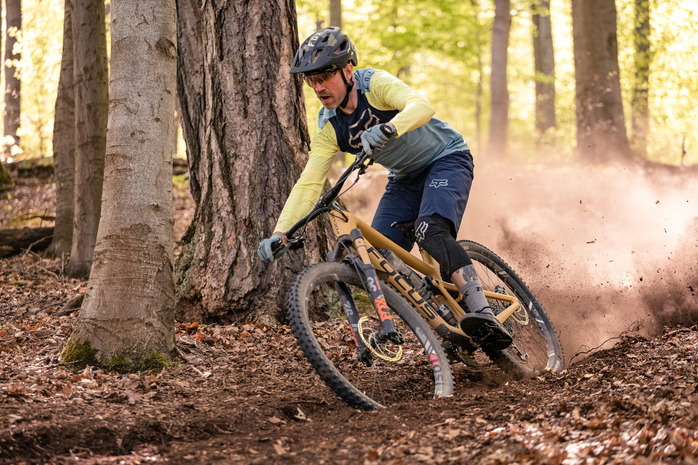
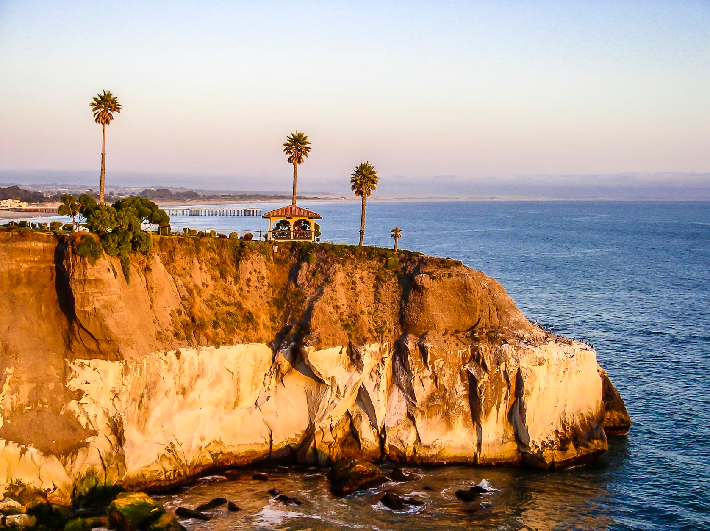
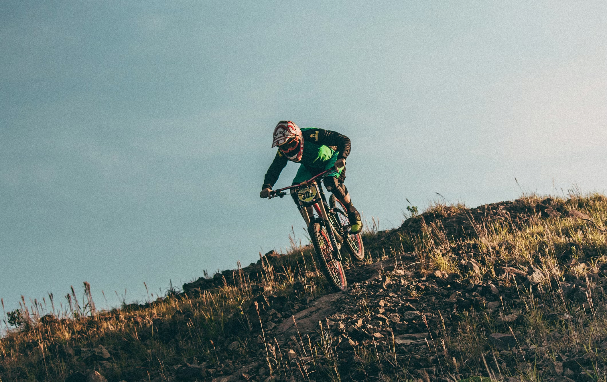
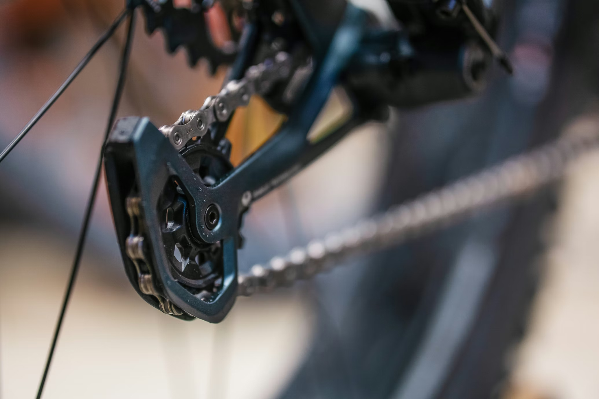

#1 Central Coast
In the fifth publication of Shredding California, San Luis Obispo again ranks number one on the central coast for mountain bike destinations. Slocals attribute the win to San Luis Obispo's diverse terrain and mix of technical features with flowy singletrack. Between Madonna, West Cuesta, Irish Hills, Pismo Preserve, and MDO, it's really no surprise to see SLO back on top.

Photo Gallery
See some highlights and views from around beautiful San Luis Obispo!

Employees Only
The Central Coast Concerned Mountain Bikers lobbies for unrestricted access to MTB trails that fall within the Camp San Luis Boundary, such as Undercover Buddy, Employees Only, and Pick and Shovel.

Paying for Pismo
Riders will now have to pay for access to Pismo Preserve, the beloved trail system in Pismo Beach known for its pristine singletrack and iconic SLO FLow.

Race Ready
Sign up for the ninth annual Central Coast Classic, where riders from all over the central coast will be competing in the region's most memorable downhill sprint to the finish.

Slocal Deals
Visit Foothill Cyclery on Foothill Blvd. for deals on all your favorite MTB products. From tires to helmets to goggles and everything in between, they've got you covered.